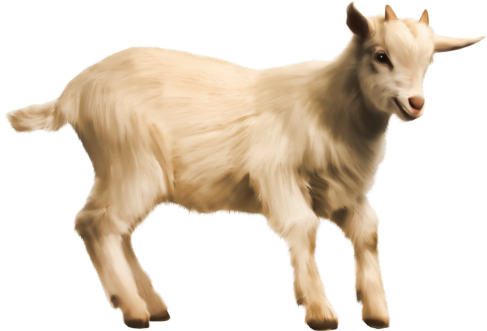

|  | YAGI |
YAGI est un site indépendant s'appuyant sur les informations de Wikipédia afin de fournir un contenu de qualité sous une mise en forme qualitative.
Toutes les informations tirées de ce site ont été trouvées sur https://fr.wikipedia.org/wiki/Ch%C3%A8vre.
Toutes les images trouvées sur ce site ont été trouvées sur Wikipédia. (Excepté l'arrière-plan et les icones trouvés respectivement sur https://imgur.com/QVFUaZP ; http://images-et-tubes-pour-tous.i.m.pic.centerblog.net/o/8bd22bc2.png ; https://www.icone-png.com/png/54/53517.png )
Toutes les vidéos ont été trouvées sur https://www.youtube.com/
Ce site a été entièrement codé par moi-même à l'aide également de https://www.w3schools.com/